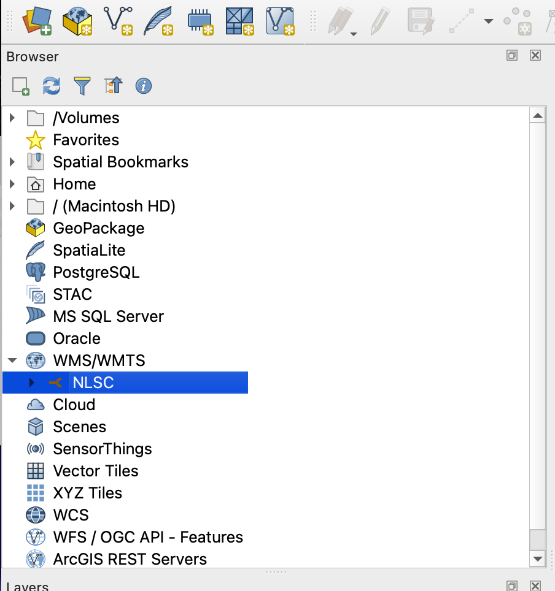
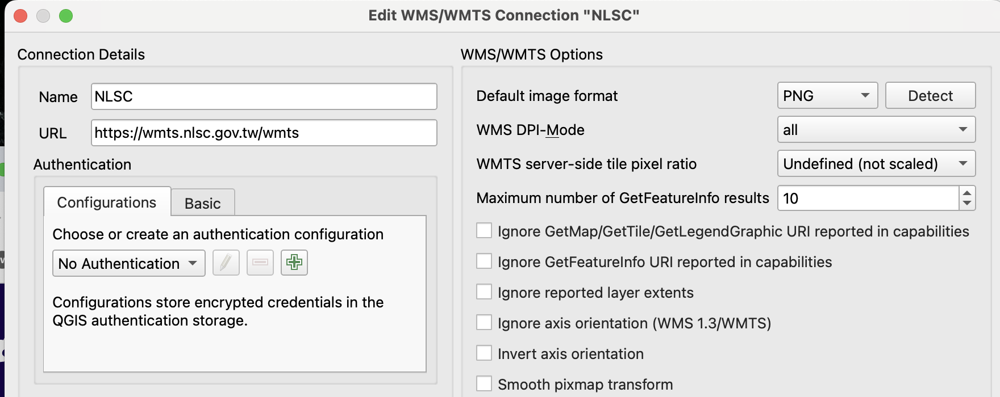

QGIS 3.44 LTRQGIS 3.44 LTR
Every technique the course used, in the order you will need it. Each one has the steps, the trap the team actually hit, and where it came from. 課程用到的每一項技術，照需要的先後排列。每項附步驟、團隊實際踩到的坑，以及出處。
Everything in this handbook assumes these three things are in place.本手冊的所有內容都以這三項為前提。
Source: important-documents › Preliminary, 1 July.出處：important-documents › Preliminary，7 月 1 日。
The National Land Surveying and Mapping Center (NLSC) serves Taiwan's official base maps, aerial photos and land-use layers as tiles. Connect once and they appear in every project.國土測繪中心（NLSC）以圖磚方式提供官方底圖、航照與土地使用圖層。連線一次，之後每個專案都能用。
NLSC. URL:名稱填 NLSC，URL 填： https://wmts.nlsc.gov.tw/wmts

Layers the team used, by their server names: PHOTO2 (aerial photo), nURBAN1 (non-urban land use), CITY (county boundaries), B100000. To see what any layer is, look it up on the團隊用過的圖層（伺服器名稱）：PHOTO2（正射影像）、nURBAN1（非都市土地使用）、CITY（縣市界）、B100000。各圖層的說明請查 NLSC layer list國土測繪中心圖層清單.。
Trap注意 · WMTS layers are pictures. You can style how they display but you cannot query, join or count them. When you need the data behind a layer, download the shapefile from data.gov.tw instead.WMTS 圖層只是圖片，可以調整顯示方式，但無法查詢、合併或計數。需要圖層背後的資料時，改從 data.gov.tw 下載 shapefile。
Source: #chat, Dr. Daniel, 3 July and 6 August; layer names read from the team's .qgz files.出處：#chat，Dr. Daniel，7 月 3 日與 8 月 6 日；圖層名稱取自團隊的 .qgz 檔。
A map without a title, legend and scale is a screenshot. Dr. Daniel graded on these four from the first homework.沒有標題、圖例和比例尺的地圖只是截圖。Dr. Daniel 從第一份作業就以這四項評分。
Trap注意 · Homework was PDF only. When an export failed, a screenshot was accepted only if it still showed the title, the map, the legend and the scale.作業只收 PDF。輸出失敗時，截圖必須仍包含標題、地圖、圖例、比例尺才會被接受。
Source: #chat, 3 and 21 July.出處：#chat，7 月 3 日與 21 日。
Two tutorials set as the first homework. Styling decides what the reader sees first.第一份作業指定的兩份教學。樣式決定讀者先看到什麼。
The two kinds of GIS data. Knowing which one you have decides every next step.GIS 資料的兩大類。先知道手上是哪一種，後面每一步才知道怎麼做。
| Raster網格（Raster） | Vector向量（Vector） | |
|---|---|---|
| Made of組成 | A grid of cells (pixels)一格一格的像素 | Points, lines, polygons點、線、面 |
| Good for適合 | Things that vary smoothly: temperature, elevation連續變化的東西：溫度、高程 | Discrete features: stations, roads, county borders離散的物件：測站、道路、縣市界 |
| Files檔案 | .tif, .asc, WMTS tiles | .shp, .geojson, .gpkg, CSV with coordinates |
Source: the guide on the ReLEAF Geospatial Analysis page.出處：ReLEAF Geospatial Analysis 頁面上的入門指南。
Most Taiwan data arrives as a table: stations, farms, readings. This is how a table becomes a layer.台灣的資料多半是表格：測站、農場、觀測值。這是表格變成圖層的方法。
StationID, Name, Latitude, Longitude, then one column per value (Jan to Dec, or one per year).依 Dr. Daniel 在白板上的格式排 CSV：一列一個測站，欄位 StationID, Name, Latitude, Longitude，接著每個數值一欄（1 到 12 月，或每年一欄）。Longitude, Y field Latitude, CRS EPSG:4326 - WGS 84.點座標：X 欄 Longitude、Y 欄 Latitude，CRS 選 EPSG:4326 - WGS 84。Worked example:範例檔： Taiwan_CWA_Stations.csv and the shapefile made from it,與由它轉出的 shapefile Taiwan_CWA_stations.zip.。
Trap注意 · Longitude is X and latitude is Y. Swap them and Taiwan lands in the Indian Ocean. Values near 120 and 23 mean degrees (EPSG:4326); six- or seven-digit values mean a projected system such as TWD97 (EPSG:3826), and you must say so when loading.經度是 X、緯度是 Y，填反了台灣會跑到印度洋。數值在 120 與 23 附近是經緯度（EPSG:4326）；六、七位數的數值是投影座標，例如 TWD97（EPSG:3826），載入時要選對。
Source: #chat, 9 July; whiteboard of 9 July; the wiki guide.出處：#chat，7 月 9 日；7 月 9 日白板；wiki 入門指南。
The standard vector format, and the one data.gov.tw uses. One shapefile is several files that must travel together.標準的向量格式，也是 data.gov.tw 使用的格式。一個 shapefile 由好幾個檔案組成，必須放在一起。
.shp .shx .dbf .prj .cpg together. .prj holds the coordinate system; .cpg holds the text encoding..shp .shx .dbf .prj .cpg 要放在一起。.prj 記錄座標系統，.cpg 記錄文字編碼。Trap注意 · Older government files name their layers and fields in Big5. One of the team's projects shows a soil map whose Chinese name had turned to garbage characters. If labels or field names look broken, open Layer Properties › Source and set the encoding to Big5; if the file name itself is broken, re-extract the zip with an extractor that lets you choose the encoding.較舊的政府檔案用 Big5 命名圖層與欄位。團隊有一個專案裡的土壤圖，中文檔名就變成了亂碼。標籤或欄位名稱亂碼時，到 Layer Properties › Source 把編碼設成 Big5；若是檔名本身亂碼，換一個能指定編碼的解壓縮工具重新解壓。
Trap注意 · Zips made on a Mac carry a __MACOSX folder. Ignore it; it is not data.Mac 壓縮的檔案會多一個 __MACOSX 資料夾，忽略即可，那不是資料。
Most project maps colour counties by a number that lives in a separate table: rice yield, farmer age, fertilizer use.大多數專案地圖是用另一份表格裡的數字替縣市上色：稻米產量、農民年齡、肥料用量。
Trap注意 · Join on a code, never on a name. 台 and 臺 differ, English spellings differ, and the counties changed in 2010 (台北縣 became 新北市; Taichung, Tainan and Kaohsiung counties merged into their cities), so a 1980 to 2025 series will not match today's boundaries by name. The team's用代碼合併，不要用名稱。「台」與「臺」不同、英文拼法不同，而且 2010 年縣市改制（台北縣改為新北市；台中、台南、高雄縣與市合併），1980 到 2025 年的資料用名稱對不上現在的界線。團隊的 Farmer_age_taiwan.csv carries COUNTY_ID for this reason.就是為此帶了 COUNTY_ID 欄。
Source: #chat, homework of 14 July.出處：#chat，7 月 14 日作業。
Census tables give counts per age bracket, not an average. Renee's farmer-age map needed one number per county.普查表給的是各年齡級距的人數，不是平均年齡。Renee 的農民年齡地圖需要每個縣市一個數字。
( "Ages 15-24" * 19.5 + "Ages 25-44" * 34.5 + "Ages 45-64" * 54.5 + "Ages 65-69" * 67 + "Above 70" * 75 ) / "Total People"
Trap注意 · The 75 above is an example, not a fact. The choice moves every county's average, so it belongs in the figure legend. Renee's own note: "I made the average by taking the median of all the age ranges and then calculating the average for each county in the field calculator."上面的 75 只是示範，不是事實。這個值會影響每個縣市的平均，所以必須寫進圖例。Renee 自己的說明：先取每個年齡級距的中位數，再用欄位計算機算出每個縣市的平均。
Source: #chat, Renee, 29 July.出處：#chat，Renee，7 月 29 日。
The project's argument is an overlap: hot places where old farmers grow rice. That takes two variables on one sheet.專案的論點是一種重疊：高溫地區剛好是高齡農民種稻的地方。這需要在同一張圖上放兩個變數。
Examples:範例： temperature and rice yield溫度與稻米產量 · farmer age and heat stress農民年齡與熱逆境.
Elevation and satellite data come in tiles. Merge them into one raster, then clip it to your area.高程與衛星資料是一塊一塊的圖磚。先拼成一張網格，再裁切到研究範圍。
Source: GIS Notes (Google Doc), class of 14 July.出處：GIS Notes（Google 文件），7 月 14 日課堂。
Many Taiwan statistics are published as PDF. QGIS cannot read them until they are a CSV again.很多台灣統計資料只以 PDF 發布。轉回 CSV 之前，QGIS 讀不了。
Files:檔案： taiwan_temps_yearly_summary.csv · the summary as PDF摘要 PDF.
The team's own contribution on the wiki: one reusable prompt that turns inconsistent tables into a clean CSV, GeoJSON or shapefile without letting the model invent coordinates.團隊放在 wiki 上的貢獻：一份可重複使用的提示詞，把不一致的表格轉成乾淨的 CSV、GeoJSON 或 shapefile，而且不讓模型捏造座標。
Its rules: use only values in the file; flag missing or ambiguous fields; show the working for any calculation; point out unusable coordinates before using them; state the output CRS.規則：只用檔案裡有的數值；標出缺漏或不明確的欄位；計算要附過程；先指出無法使用的座標；明確寫出輸出的座標系統。
I'm working with spatial data that I need prepared for use in QGIS. Current data format: [CSV / GeoJSON / Shapefile] Desired fields in output: [e.g. site_id, latitude, longitude, organism, soil_type, ph, collection_date] Desired output format: [CSV / GeoJSON / .shp] Destination: This output will be loaded directly into QGIS for spatial analysis. My question: [e.g. "convert this into a clean GeoJSON with only the fields I need"] Step 1 — Locate the coordinates. Before answering my question, find the fields in my data that represent location (e.g. latitude/longitude, lat/lon, X/Y, easting/northing, or a combined "coordinates" field). Tell me which columns you identified and what you believe their coordinate reference system (CRS) is, based on the values and any metadata in the file (e.g. values in the range -180 to 180 / -90 to 90 suggest WGS84; large 6-7 digit values suggest a projected CRS like UTM). If the CRS is not stated and cannot be reasonably inferred, say so explicitly and ask me rather than assuming WGS84 by default. Step 2 — Prepare for QGIS. - Reproject/report coordinates so the final output is usable in QGIS. For GeoJSON, use WGS84 (EPSG:4326) with [longitude, latitude] order, per spec. - If the source data is already in a projected CRS and I haven't asked for reprojection, keep the original values but state the CRS explicitly in your answer so it can be set correctly in QGIS. - For shapefile output, note that a .prj file defining the CRS is required — tell me what it should contain. Rules for your answer: 1. Only use values that are actually present in the file. Extracting or reformatting an existing coordinate (splitting a combined field, converting units, reprojecting a stated CRS) is allowed and expected. Inventing, estimating, or geocoding a coordinate that is not derivable from the file's own data is not allowed — flag those records as "missing coordinates" instead. 2. If a field is missing, empty, or ambiguous for a record, say so explicitly rather than guessing — flag it as "uncertain" rather than filling it in. 3. If my question requires a calculation (distance, area, count, filter), show your work or the logic you used, not just the final number. 4. If a coordinate or value looks unusable (out of valid range, inconsistent format, mismatched CRS across rows), point it out before using it. 5. Give me output in exactly the format I requested, ready to copy or download, and state the CRS of that output explicitly in your reply.
Source: ReLEAF Geospatial Analysis page, Text 1, quoted unchanged.出處：ReLEAF Geospatial Analysis 頁面 Text 1，原文照錄。
The wiki's opening figures are animations: warming against rice yield over 1980 to 2026. Eva made five versions before the wiki one.wiki 開場的圖就是動畫：1980 到 2026 年的升溫對稻米產量。Eva 在 wiki 版本之前做了五版。
Design rules agreed on 24 July: four seconds at most; overlay the difference instead of maximising data; counties may appear as their data begins. Eva's legend convention: blank means too few years, hatched means less precise.7 月 24 日講定的設計原則：最長四秒；疊出差異，不求塞滿資料；縣市可以在有資料的年份才出現。Eva 的圖例慣例：空白代表年份太少，斜線代表精度較低。
Trap注意 · Removing data points changes the story. When Eva dropped three stations on 28 July she said so in the message. Do the same in the caption.移除資料點會改變故事。Eva 在 7 月 28 日移除三個測站時，在訊息裡寫明了。圖說裡也要這樣寫。
Every number on a map needs a source someone else can open. A dataset with no source cannot go on the wiki.地圖上的每個數字都要有別人打得開的出處。沒有出處的資料集不能放上 wiki。
Format the team used, from the storyline doc:團隊在故事線文件裡用的格式：
Author. Map title [format]. Scale. Place of production: Producer, Date. Using: Software title [format]. Edition. Place: Producer, Date. Taiwan Central Weather Administration. Monthly Mean Temperature in Taiwan, between 1991-2020. <https://www.cwa.gov.tw/V8/E/C/Statistics/monthlymean.html>, January 2021. Using QGIS 4.0.3.
More cases:更多範例： Trent University GIS citation guide.
Trap注意 · The table posted on 7 August for the regional fertilizer map (fifteen regions, round tonnages) has no source in the channel. Before a table like that reaches a page, trace each number to where it was published. The national fertilizer figures on the wiki come from the Ministry of Agriculture's annual series (data.gov.tw 9690).8 月 7 日為區域肥料地圖貼出的表格（十五個區域、整數噸數）在頻道裡沒有出處。這樣的表格要上頁面之前，每個數字都要追到它的發布來源。wiki 上的全國肥料數字來自農業部的年度統計（data.gov.tw 9690）。